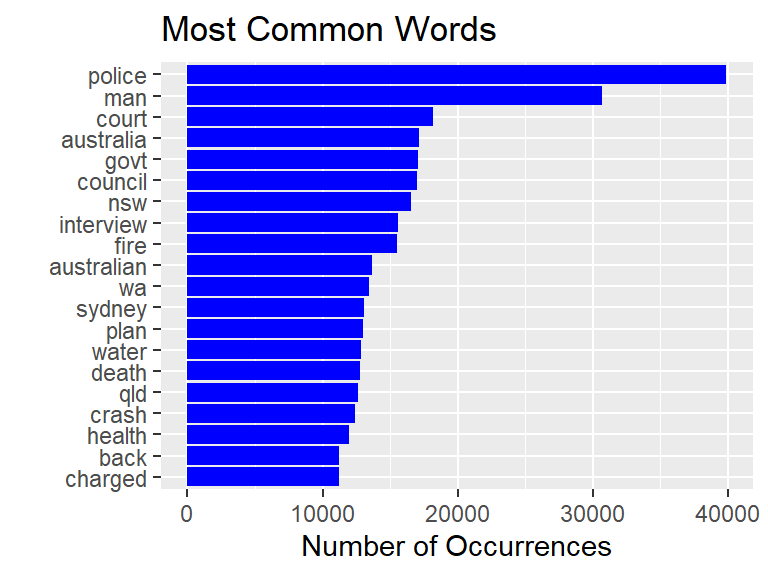
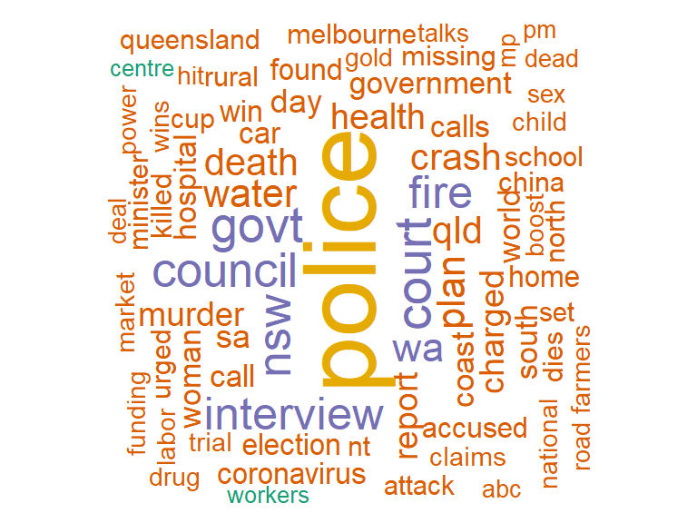
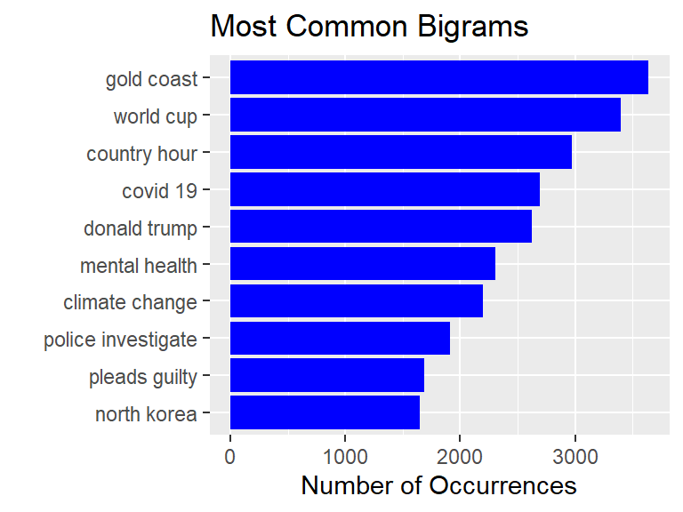
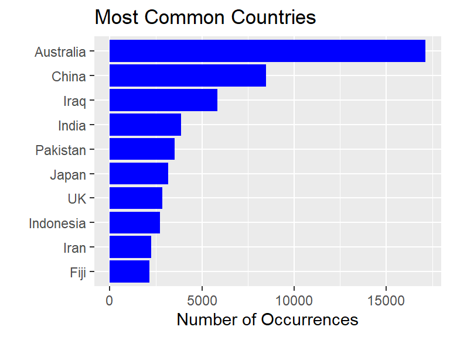
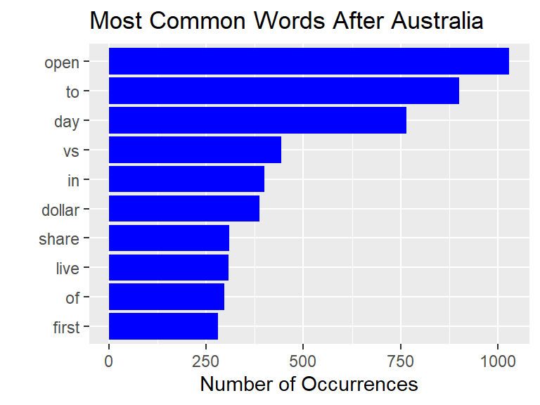
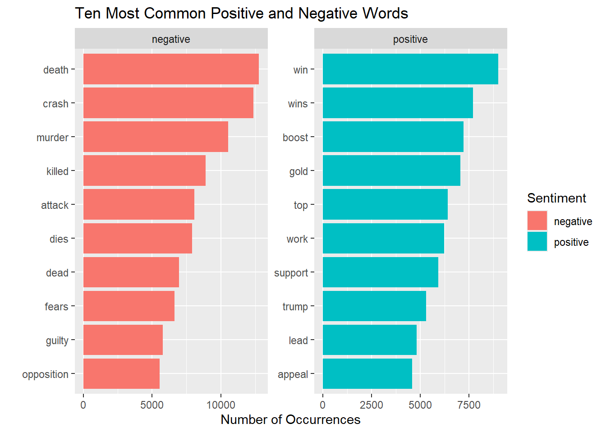
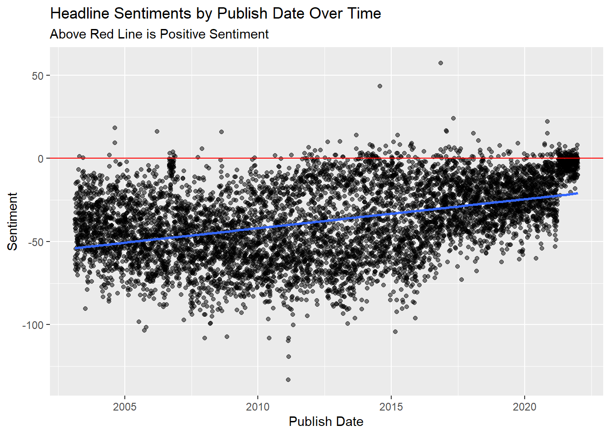

Mini Project #1
Leo Benson
Introduction
Stories in the news have an extreme range of topics. From hopeful accounts of success to the complexity of current global events, media intake of the news is constant through social media and news companies. Headlines capture the attention of consumers and categorize the news story, but what exactly do these one sentence advertisers have to say? The Kaggle dataset “A Million News Headlines” contains headlines from the Australian Broadcasting Corporation (ABC) from 2003 to 2021. ABC is a reputable Australian news source that captures stories from across the world, and the dataset can be used to perform text analysis of headlines over time.
I decided to focus on the topics and sentiment of ABC news over time to get a comprehensive understanding of news topics from a global perspective. I approached the analysis with the following questions in mind:
What topics are most common in ABC news headlines?
How has the sentiment of ABC news headlines changed over time?
Question 1: What Topics Are Most Common?
After tidying the data, I began by simply observing the most common word occurrences, ruling out common stop words.
Police and man were the most common words by a decent amount. Looking down the list, two other things stood out to me. First, the negativity of the words. Common words like “fire,” “death,” “crash,” and “charged” highlight the conflict and disaster represented in the news. Second, many of the most popular words were different mentions of Australia: sensible considering that ABC is an Australian news site. To create a more comprehensive visualization, I created a word cloud that removed the different mentions of Australia.

Without the presence of Australia in the most common words, it is even more clear the abundance of awful events that appear commonly in the news. Perhaps negative events are what people really want to know about. However, one word is not necessarily representative of an entire topic. To better understand what specific topics are most common in ABC headlines, I examined the most common two word combinations.

The bigram revealed that beyond the topics about gold coast Australia and country hour (a popular Australian radio program hosted by ABC), police, politics, and disaster were still the most common headline topics. Furthermore, it struck me how outside of the two Australian bigrams, the topics in ABC headlines focus on global issues. The presence of challenges such as covid 19, climate change, and mental health reveal what large-scale issues tend to make headlines. Interestingly, for a global news site like ABC, United States politics and global affairs seem to be a popular topic with Donald Trump as the fifth most popular bigram.
Next, considering the wide scope of ABC, I moved my focus to the most common countries mentioned in the headlines to better inform my analysis of common topics.

Despite talks of United States politics, it was not even in the top ten most mentioned countries. ABC’s home country had the most occurrences of course, and China and Iraq had considerable numbers. I wondered whether these countries had some foreign relations with Australia that caused an increase their appearances in ABC headlines. For a global news source based in Australia, what kind of topics does ABC discuss relating to their home country? To answer this question, I decided to focus on the most common words coming right after a mention of Australia.

Words like “open,” and “to,” and “vs” portray how politics and international relations are the forefront topics regarding Australia. “Open” being the most common word following a mention of Australia also could allude to more positive news. Maybe the government is open to policy that benefits locals, or partnership with another country. Additionally, supporting my hypothesis that countries were mentioned based on their international relations with Australia, “vs,” was the fourth most common word in the analysis. I suspect that the countries highlighted in the list by occurrence commonly appear after the “vs” or the “open” depending on their relationship with Australia.
From the raw count of words alone, it is difficult to have a more comprehensive understanding of the true sentiment of the news. Also, with the massive range of publish years, sentiment has likely changed and cannot be fully mapped by analyzing the most common words. With these ideas in mind, I pivoted to answer my second question,
Question 2: How Has The Sentiment Changed Over Time?
My analysis on the most common words in the headlines made it abundantly clear that there is a knack for negativity. But is it truly all that bad? Considering the presence of disaster in the news, I was curious to view a representation of the other side. What are the most common positive words that occur in ABC news headlines? To do so, I began to visualize the sentiment behind each word.

Looking on the bright side, maybe some news headlines are positive. With that being said, there are a few aspects of the ten most common positive words that could suggest otherwise. The differences in the scales of each graph shows that negative words are far more common than positive words. Out of the five greatest counts for the positive side, only one exceeds ten thousand occurrences, compared to three of the top five most popular negative words. Additionally, many of the positive words presumably have political connotations that are not necessarily something readers find as a good thing. “Win,” “trump,”, “boost,” “support,” “lead,” and “appeal” could all be negative depending on the case, candidate, or policy being discussed.
Considering that the news seemed overwhelmingly negative, I shifted to focus on sentiment in a holistic manner, analyzing entire sentences and even entire years of headlines.

Plotting sentiment over time by publish date yielded some interesting results that helped inform my question. Nearly all of the publish days had negative sentiment, and therefore a greater number of negative words than positive words. While this has remained true over time, I was struck by the slight positive trend in sentiment over time. Although publish days have overwhelmingly negative sentiment, it appears to be less negative in more recent years. Curious by this trend, I then aimed to break up the sentiment even further to simplify the visualization. I wondered if the trend would differ if I focused on sentiment in entire years of headlines.
![This is a scatter plot with a smoother showing ABC headline sentiments over time. Publish year is on the x axis and ranges from 2003 to 2021. Sentiment, the difference in number of positive and negatively labelled words, is on the y axis and ranges from -20,000 to 0. The scatter plot shows that over time sentiment has fluctuated but overall increased while remaining negative. From 2003 to 2009 there is a a decrease in sentiment then from 2009 on there is a positive linear relationship between sentiment and publish year. At the top of the graph, there is a horizontal red line indicating where the sentiment is zero and the points never exceed it.](quarto_MP_files/figure-html/unnamed-chunk-11-1.png)
Grouping the headlines by year created an even more extreme change in sentiment over time. Again, the sentiment each year was overall negative, but recent years produced more positive sentiments. Observing sentiment by year also highlighted the extreme lows of 2008 and 2009. Perhaps the 2008 financial crisis contributed to the extra negative headlines.
Conclusion:
My text analysis of “A Million News Headlines” from Kaggle gave insight into my two questions of interest. Beginning with question one, I found that police, politics, and disaster were the most common topics in the headlines using individual word and bigram analysis. I then examined the global emphasis of ABC and found that countries with international relations to Australia are mentioned frequently, and that ABC may have a more positive tone when discussing home-country topics as opposed to world wide issues. These findings prompted my inquiry of question two where I found that while headlines have negative sentiment overall, they seem to be getting less negative over time. Calculating sentiment by year allowed me to examine this relationship based on global events, and the upturn was even more extreme.
Headlines do not tell the whole story, but my text analysis provides insight into what global news sites discuss and the negative sentiment behind them. I would be curious to dive deeper into how specific news topics have changed over time to gain a wider understanding of why sentiment has shifted. Furthermore, comparing ABC news headlines to other global news sources could highlight strategies that compel audiences in addition to differences between news companies from other countries.
The news is one of the most consumed aspects of media, and understanding the inner workings of how information spreads in our world is in everyone’s best interest. In a world with countless issues, it is critical to inspect the information presented to us at first glance. Headlines draw us in, but their content and sentiment are just the beginning.